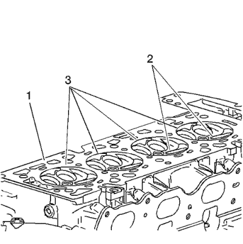

Limpieza y comprobación de la culata
Revisión y limpieza de la válvula

Advertencia: Pueden provocarse lesiones físicas si el disolvente se inhala o se expone a la piel.
Nota: No arañe el vástago de válvula con el cepillo de alambre.
- Limpie las válvulas de carbonilla, aceite y barniz. La carbonilla puede eliminarse con un cepillo de alambre. El barniz puede eliminarse poniendo las piezas en remojo en disolvente.
- Limpie las guías de válvula.
- Revise si el vástago de válvula (4) está desgastado.
- Revise si la ranura de la chaveta de válvula está desconchada o desgastada (5). Sustituya la válvula si está desgastada o desconchada.
- Compruebe si la cara de la válvula presenta quemaduras o grietas (1). Si hay piezas desprendidas, compruebe si hay daños el pistón correspondiente y en la zona de la culata.
- Compruebe si el vástago de válvula presenta rebabas y arañazos. Las rebabas y los arañazos de menor importancia pueden eliminarse con una piedra de aceite.
- Use bloques en V para comprobar si el vástago de válvula está recto y si el platillo de válvula está doblado o deformado (3). Las válvulas dobladas o deformadas deben sustituirse.
- Limpie los depósitos de la cara de la válvula. Compruebe si la cara de válvula presenta ranuras.
- Sustituya la válvula si la cara está ranurada. Las caras de válvula no pueden maquinarse. Si las válvulas están desgastadas o dañadas, deben sustituirse.
- Las válvulas pueden solaparse ligeramente con los asientos de válvula.
Limpieza e inspección de las superficies de las juntas y de las culatas
- Retire las bujías. Consultar Sustitución de la bujía .
- Revise la junta de la culata y las superficies de conexión para comprobar si presentan fugas, corrosión y partes saltadas. Si ha fallado la junta, utilice las siguientes averías para determinar cuál es la causa:
| 2.2. | Culata alabeada o floja. |
| 2.3. | Pasadores de ajuste que faltan, no están en sus sitios o no están bien acoplados. |
| 2.4. | Corrosión en la zona de retenes alrededor de los conductos de refrigerante. |
| 2.5. | Virutas o residuos en los orificios de los tornillos de la culata. |
| 2.6. | Orificios de tornillos en el bloque motor no taladrados o insuficientemente roscados. |

- Revise la superficie de la junta de culata del cilindro.
| • | Se puede reutilizar la culata si sólo hay corrosión en una banda de 4 mm (0,375 pulg.) alrededor de cada cámara de combustión (1). |
| • | Sustituya la culata si la zona entre los asientos de válvula está agrietada (2). |
| • | Sustituya la culata si encuentra corrosión en una franja de 4 mm (0,375 pulg.) alrededor de alguna de las cámaras de combustión (3). |
- Limpie los pernos de la culata.
Nota: No utilice cepillos de alambre en la superficie de sellado de las juntas.
- Limpie la culata. Retire cualquier resto de barniz, hollín y carbonilla del metal desnudo.
- Limpie las guías de válvula.
- Limpie los orificios roscados. Utilice un cepillo de cerdas de nylon.
- Limpie los restos de sellante de los orificios de conexión.
- Examine los tornillos de culata en busca de roscados dañados o cabezas dañadas o estiradas ocasionados por un uso incorrecto de las herramientas.
- Sustituya todos los tornillos que muestren signos defectuosos.
- Examine la culata en busca de grietas. Compruebe entre los asientos de válvula y en las tubuladuras de escape.
Nota: No intente soldar la culata, sustitúyala por otra.
- Compruebe que la superficie de la culata no presenta corrosión, inserciones de arena y orificios.
- Compruebe la planeidad de la superficie de culata. Consultar
Especificaciones de los pares de apriete : 1.6L LDE, LXV y 1.8L 2H0 .: Si la culata no cumple las especificaciones, sustituya la culata. No rectifique la culata.
- Examine todos los orificios roscados por si están deteriorados. Las roscas deben reacondicionarse con suplementos de rosca.
- Compruebe las superficies de sellado.
- Compruebe los tapones de culata.
| © Copyright Chevrolet. Reservados todos los derechos |